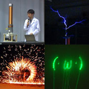
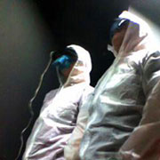
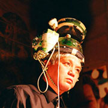
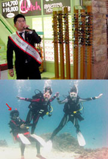

Index
Presenters
#000001
#000002
#000003
#000004
#番外編
#000005
#000006
#000007
|
#000007
ドークボット B∀Z∀∀R
日時：2008年7月26日(土) 17:30〜20:30
料金：入場無料
会場：横浜赤レンガ倉庫 1号館3階ホール
協力：ヨコハマEIZONE
「電気で変なことやってる奴ら」が電気をテーマにフリーマーケット開催！！！
日頃の充電の成果（自作マシン、自作ソフト、レア機材、電化製品、電子部品、謎の回路、電波なポエム、、等々）の大放電セール！！
フリマｘライブｘプレゼンｘ？など前代未聞の企画も繰り広げられ、感電の嵐！
あなたの財布も思わず漏電！！？
イベントレポート
記事→→→→ by Engadget Japanese
ブログ→→→ by 花夢電科雑多log
ブログ→→→ by メカロボショップ
写真→→→→ flickr
＜出演者＞
高エネルギー技術研究室 菊地秀人

PUNSUCA

今井次郎

MCなべちゃん×ククナッケ

＜フリマ出店＞
Make: Japan → 書籍販売
MechaRoboShop → 電子部品・パーツなど（オープンソースもの中心）
山口創司 (PANTY) → 真空管オシレータ・レアなミキサー・電子パーツ・電気工作本など
エキソニモ → ジャンク
B-lab → 自作塩ビ管スピーカーや基盤・デバイス・ちょっとしたライブなど
ＤＪぷりぷり → セルフやきそば・Ｔシャツ販売
The Breadboard Band → ブレッドボード
YukaRitty → CD・写真・デバイス部品など
日高芳智 → 自作ハードウェア・ソフトウェア・ジャンク品の販売、ロボットの展示
松村誠一郎 → 新作"Graphsono"を紹介
エレキジャンクひろば → ジャンクPC・CD・ファッショングッツ
Engadget Japanese → 市販不要ガジェットのデモ＆叩き売り。
嶋田匡洸 → リボンコントローラーもどき
The-menz → LEDなどの光るおもちゃ・ジャンク組み込みLinuxボード
いつか音楽と呼ばれるもの
Audible Realities → iPhoneアプリと関連グッズの展示販売
モーリ＆カンタ → オリジナルライターの販売
エイジゼロ → ゲームのデモ展示
土佐信道 from 明和電機
| |